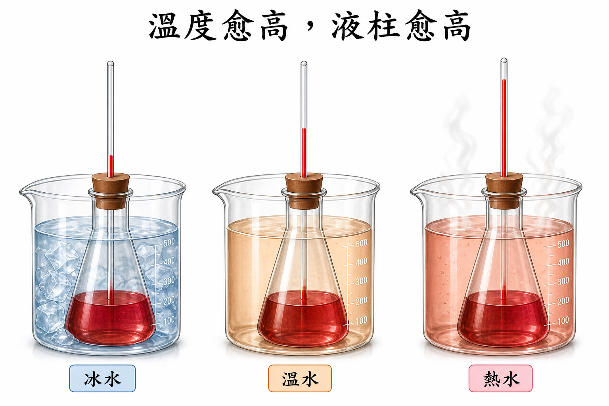

探
本節探究 液柱在量什麼？
重點概覽：細管 ｜ 熱脹冷縮 ｜ 靈敏 ｜ 刻度
手摸冷熱不可靠。先預測：錐形瓶加細管，放進冰水，水位會升還是降？管子粗一點會比較好觀察嗎？下面各站找證據。
探究問題：自製溫度計放進冰水和熱水，液柱會往哪邊走？
重點概覽：細管 ｜ 熱脹冷縮 ｜ 靈敏 ｜ 刻度
手摸冷熱不可靠。先預測：錐形瓶加細管，放進冰水，水位會升還是降？管子粗一點會比較好觀察嗎？下面各站找證據。
液泡＋細管，就是溫度計的骨架
探究線索：要用哪些器材模擬「下面一泡液體、上面一根有刻度的細管」？
目的：探討溫度與自製溫度計水位變化的關係，了解溫度計原理。
規畫：可用 模擬液體溫度計。
對照上面的器材表，逐項勾選。到齊且完好／足量才打勾；玻璃管與瓶子有沒有裂寫在備註。
| 項次 | 材料 | 應備 | 到齊 | 完好／足量 | 備註 |
|---|---|---|---|---|---|
| 1 | 酒精燈 | 1 盞 | |||
| 2 | 燒杯 500 mL | 1 個 | |||
| 3 | 滴管 | 1 支 | |||
| 4 | 紅墨水 | 適量 | |||
| 5 | 三腳架及陶瓷纖維網 | 1 組 | |||
| 6 | 細玻璃管 | 1 支 | |||
| 7 | 透明膠帶 | 適量 | |||
| 8 | 冰塊 | 適量 | |||
| 9 | 錐形瓶 125 mL | 1 個 | |||
| 10 | 單孔橡皮塞 | 1 個 | |||
| 11 | 淺色卡片 | 1 張 |
全組依表勾完；玻璃有裂或細管缺失時先舉手，不要自行挪用別組。
缺件寫在空格，沒有就寫「無」。確認到齊後才裝紅色液體。缺件：
步驟 Q：為什麼材料沒確認完就不能做？
少了細管就看不出水位變化；瓶子有裂，加水或加熱時可能破。
錐形瓶裝約八分水，加入紅墨水攪勻後加滿。
把穿好細玻璃管的單孔橡皮塞塞緊，讓水升進細管。
插管子不要用力過猛，以免玻璃破裂。
步驟 Q：為什麼要用細玻璃管？改用粗管會怎樣？
因為玻璃管的管徑愈小，水位的高低變化愈大，愈容易觀察。
這一站的證據：細管把體積變化放大成高度。下一站換冰水、溫水、熱水。
等穩定再畫線
探究線索：裝置完成時的水位，代表的是氣溫還是 0°C？
把淺色卡片用膠帶貼在細玻璃管上，標記原水位。
觀察並記錄裝置完成時的水位。
分別把錐形瓶浸於冰水、溫水；熱水則用水浴加熱約 5 分鐘。每次都等到水位穩定，再在卡片上標記。
記錄冰水、溫水、加熱 5 分鐘後的水位高度。
不要看放進去的第一秒；玻璃和裡面的水脹縮有先後，要等穩定。

溫度愈高，液柱愈高（等穩定以後）。左冰水、中溫水、右熱水。
原水位對應當時氣溫。溫水水位若高於原水位，表示溫水比氣溫高。
這一站的證據：三種環境水位不同。下一站填表並討論原理。
實際課堂依實測；下列為活動本參考值
探究線索：從 5.40 降到 2.90 再升到 9.60，哪一個環境最冷？
| 裝置完成 | 浸於冰水 | 浸於溫水 | 加熱 5 分鐘 | |
|---|---|---|---|---|
| 水位（cm） |
1. 低溫水位較 ， 高溫較 。 溫度愈高，水位愈高。
2. 溫水水位高於裝置完成，所以溫水比氣溫 。
3. 原理：水受熱體積 、 遇冷 。
這一站的證據：數據和討論對得上熱脹冷縮。收成速記後，就能回答本節問題。
細管、脹縮、等穩定
證據卡：對照水位表再寫主張。
用液柱回答提問
自製溫度計放進冰水，穩定後液柱下降；放進熱水，液柱上升。它利用水的熱脹冷縮，細管把體積變化放大成高度，所以能比較冷熱。
下一站要問：加熱時間、質量、物質種類，哪一個會改變升溫快慢？